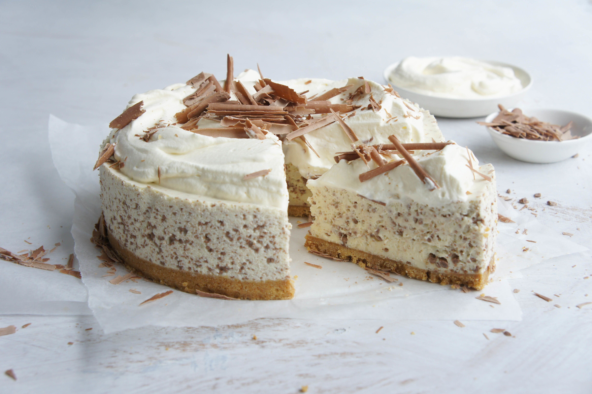

Baileys Cheesecake

Description
Bailey's cheesecake is a delicious dessert that combines the flavors of Bailey's Irish Cream liqueur with a classic cheesecake. It typically consists of a graham cracker or cookie crust, a creamy and rich cheesecake filling that's infused with Bailey's Irish Cream, and is often topped with a layer of chocolate ganache or a drizzle of additional Bailey's for extra flavor.
Ingredients
For the crust:
- 1 1/2 cups graham cracker crumbs
- 1/4 cup of granulated sugar
- 1/2 cup of melted, unsalted butter
For the cheesecake filling:
- 3 (8-ounce) packages of cream cheese, softened
- 1 cup of granulated sugar
- 3 large eggs
- 1/2 cup of Baileys
- 1 teaspoon of vanilla extract
For the baileys ganache topping:
- 1/2 cup of chocolate chips
- 1/4 cup of heavy cream
- 2 tablespoons of Baileys
Steps
- Preheat your oven to 325°F (160°C).
- In a mixing bowl, combine the graham cracker crumbs, sugar, and melted butter. Mix until the crumbs are evenly coated with the butter.
- Press the crumb mixture into the bottom of a 9-inch (23 cm) springform pan. Use the back of a spoon or your fingers to create an even crust. Place the pan in the refrigerator while you prepare the filling.
- In a large mixing bowl, beat the softened cream cheese and sugar until smooth and creamy.
- Add the eggs one at a time, mixing well after each addition.
- Stir in the Baileys Irish Cream liqueur and vanilla extract until the mixture is well combined.
- Pour the cheesecake filling over the graham cracker crust in the springform pan.
- Place the cheesecake in the preheated oven and bake for about 45-50 minutes or until the edges are set and the center is slightly jiggly.
- Remove the cheesecake from the oven and let it cool to room temperature in the pan.
- Once the cheesecake is cool, place it in the refrigerator for at least 4 hours or overnight to set.
- In a small saucepan, combine the semisweet chocolate chips and heavy cream for the ganache. Heat over low heat, stirring constantly, until the chocolate is completely melted and the mixture is smooth.
- Remove the saucepan from the heat and stir in the Baileys Irish Cream liqueur.
- Let the ganache cool for a few minutes before pouring it over the chilled cheesecake.
- Use a spatula to spread the ganache evenly over the top of the cheesecake.
- Return the cheesecake to the refrigerator to allow the ganache to set for at least 30 minutes.
- Once the ganache is set, you can remove the sides of the springform pan and serve your Baileys cheesecake.